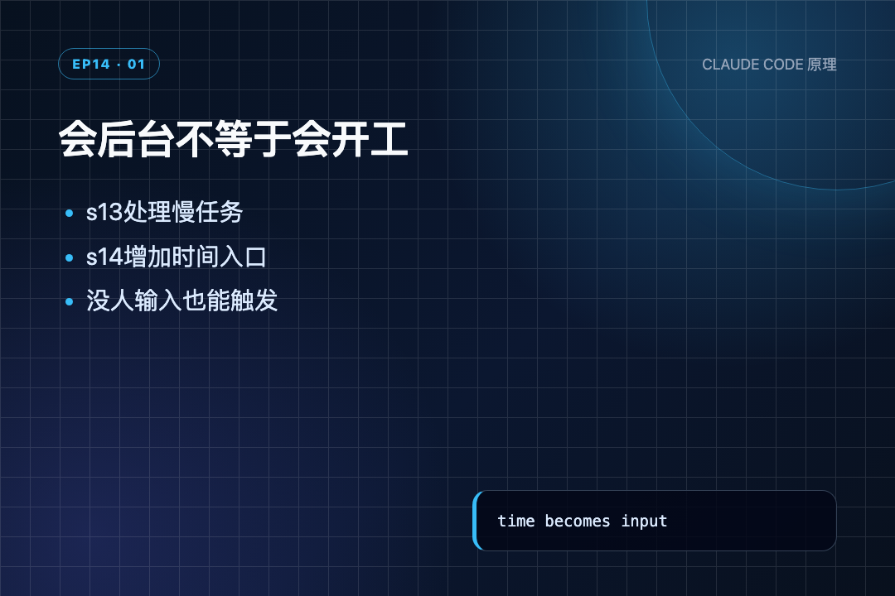
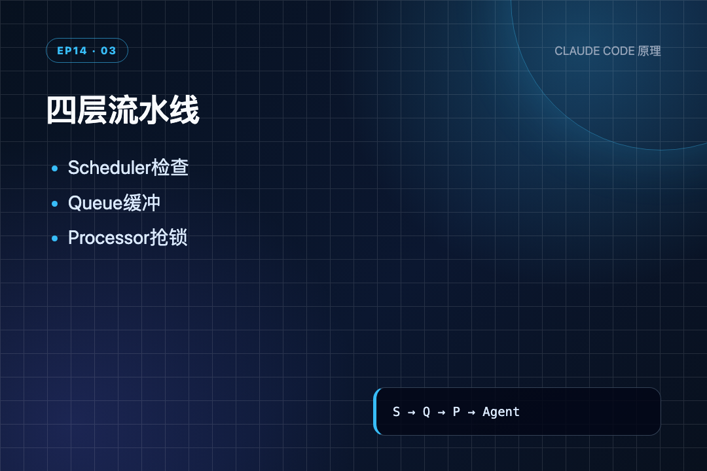
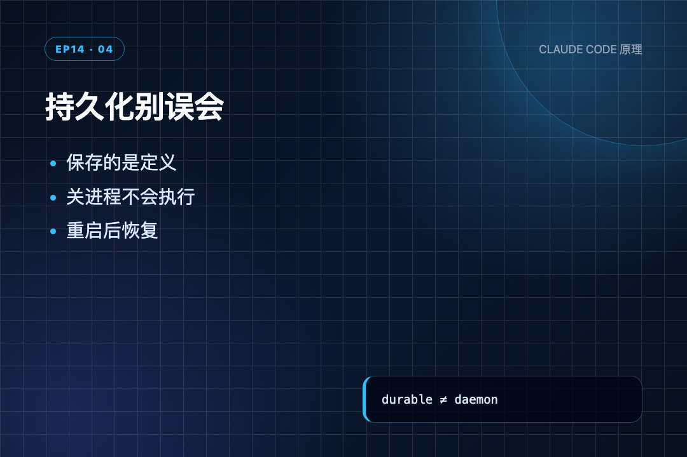

“每天早上 9 点检查 CI。”这句话听起来像一个长期安排，可普通 Agent 只会在当前对话里答一句“好的”。第二天 9 点，如果没人再发消息，它什么也不会做。
读到 s14 时我才意识到：会执行任务和会按时触发任务，根本是两回事。前者等一个请求，后者得自己看钟。
s13 已经让慢命令进后台，主循环不再守着进度条；但后台线程仍由当前这轮 tool call 启动。人不说话，Agent 就没有下一项工作。s14 在聊天入口之外，加了一条“时间到了”的入口。
我是郑同学。这一节沿着源码实际执行顺序读：注册任务 → 调度线程命中 → 放进队列 → Agent 空闲时自动开一轮。
Cron 不是让模型记住时间，而是让模型外面的程序到点给它一条新消息。
● ● ●
s13 的后台任务解决的是同一轮里的等待：命令先跑，模型继续做别的。但新工作仍从用户输入开始。
s14 新增三条工具：schedule_cron、list_crons、cancel_cron。模型负责把“每天 9 点检查构建”翻译成一条任务；模型退出后，真正盯时间的是独立线程。
后台解决“做的时候别堵住”，Cron 解决“到点以后谁来开工”。

会后台不等于会开工
● ● ●
每条定时任务先落成一个 CronJob：
@dataclass classCronJob: id: str cron: str # "0 9 * * *" prompt: str # message to inject when fired recurring: bool # True = recurring, False = one-shot durable: bool # True = persist to disk
五个字段各管一件事：
id 是取消、去重和日志关联用的任务编号。cron 只描述时间，不保存 Python 函数。prompt 是时间命中后要交给 Agent 的文字，例如 check build。recurring 决定触发后留着还是删除。durable 决定定义是否写进 .scheduled_tasks.json。CronJob 不执行工作，它只是一张预约单。这层分开很重要：调度器不需要知道怎么检查构建，只需在正确时刻把 prompt 交出去。
内存状态和两把锁放在一起：
scheduled_jobs: dict[str, CronJob] = {} # 保存还有效的定时任务 cron_queue: list[CronJob] = [] # 已到点、等待交付的任务队列 cron_lock = threading.Lock() # 保护任务表和队列的锁 agent_lock = threading.Lock() # 保护 Agent 执行，避免并发占用会话 _last_fired: dict[str, str] = {} # job_id → "YYYY-MM-DD HH:MM"，防同一分钟重复触发
scheduled_jobs 保存还有效的预约单。cron_queue 保存已经到点、等待交付的工作。cron_lock 保护任务表和队列。agent_lock 保护 Agent 本身，避免用户请求和定时请求同时占用同一份会话历史。_last_fired 记住每条任务最近在哪一分钟触发过。一个锁管调度数据，一个锁管 Agent 执行，职责没有混在一起。
CronJob装了什么
● ● ●
五段式 cron 的顺序是：
分钟 小时 日 月 星期 * * * * * 每分钟 0 9 * * * 每天 9:00 */5 * * * * 每 5 分钟 0 9 * * 1-5 工作日 9:00
教学版支持通配 *、步长 */N、列表 N,M、范围 N-M 和单值。单字段匹配函数按这个顺序解析：
def_cron_field_matches(field: str, value: int) -> bool: """Match a single cron field against a value.""" if field == "*": # 通配符，永远匹配 return True if field.startswith("*/"): # 步长模式，如 */5 step = int(field[2:]) return step > 0 and value % step == 0 # 当前值能被步长整除才命中 if "," in field: # 列表模式，递归检查每一项 return any(_cron_field_matches(f.strip(), value) for f in field.split(",")) if "-" in field: # 范围模式，闭区间检查 lo, hi = field.split("-", 1) return int(lo) <= value <= int(hi) return value == int(field) # 精确整数匹配
逐段读：
* 永远匹配。*/5 取出 5，用当前值对 5 取模；余数为 0 才命中。1-5 包含 1 和 5。真正注册时，schedule_job() 先调 validate_cron()：
defschedule_job(cron: str, prompt: str, recurring: bool = True, durable: bool = True) -> CronJob | str: """Register a new cron job. Returns CronJob or error string.""" err = validate_cron(cron) # 先校验 cron 表达式格式 if err: return err # 格式错误直接返回，不注册 job = CronJob( id=f"cron_{random.randint(0, 999999):06d}", # 生成随机 6 位 ID cron=cron, prompt=prompt, recurring=recurring, durable=durable, ) with cron_lock: # 加锁写入任务表 scheduled_jobs[job.id] = job if durable: # durable 任务额外保存到磁盘 save_durable_jobs() print(f" \033[35m[cron register] {job.id} '{cron}' → {prompt[:40]}\033[0m") return job
先校验字段数量和每段范围，错误直接返回；通过后才生成 ID、写入 scheduled_jobs。如果 durable=True，紧接着把所有 durable 任务写进磁盘。
坏表达式在入口被拒绝，不能等调度线程运行后才爆炸。从磁盘恢复任务时还会再校验一次，避免手改 JSON 后把坏数据带进进程。
● ● ●
cron_matches() 把 Python 时间转换成 cron 语义：
defcron_matches(cron_expr: str, dt: datetime) -> bool: """Check if a 5-field cron expression matches the given datetime. Standard cron semantics: DOM and DOW use OR when both are constrained.""" fields = cron_expr.strip().split() # 按空格拆成五段 if len(fields) != 5: return False minute, hour, dom, month, dow = fields dow_val = (dt.weekday() + 1) % 7 # 对齐星期编号：Python 周一=0 → cron 周日=0 m = _cron_field_matches(minute, dt.minute) # 逐字段匹配 h = _cron_field_matches(hour, dt.hour) dom_ok = _cron_field_matches(dom, dt.day) month_ok = _cron_field_matches(month, dt.month) dow_ok = _cron_field_matches(dow, dow_val) if not (m and h and month_ok): # 分钟、小时、月份必须全部命中 return False dom_unconstrained = dom == "*" # 日期是否为通配 dow_unconstrained = dow == "*" # 星期是否为通配 if dom_unconstrained and dow_unconstrained: # 都没限制，直接命中 return True if dom_unconstrained: # 只限了星期 return dow_ok if dow_unconstrained: # 只限了日期 return dom_ok return dom_ok or dow_ok # 两者都有限制，命中其一即可（标准 cron OR 语义）
这里最容易漏的是两处：
第一，星期编号不同。 Python 的 weekday() 是周一等于 0，cron 是周日等于 0；(weekday + 1) % 7 把两套编号对齐。
第二，日期 DOM 和星期 DOW 的关系不是永远 AND。 分钟、小时、月份必须全命中；日期和星期都写了具体限制时，标准 cron 语义是二者命中一个即可。
例如 0 9 1 * 1 表示“每月 1 日或每周一的 9 点”，不是只在“刚好周一的每月 1 日”执行。这是沿用了 Unix cron 的历史语义，不是普通布尔直觉。
● ● ●
独立线程每秒醒一次：
defcron_scheduler_loop(): """Independent daemon thread: poll every 1s, fire matching jobs. Individual job errors are caught to prevent one bad job from killing the entire scheduler thread.""" while True: time.sleep(1) # 每秒轮询一次 now = datetime.now() minute_marker = now.strftime("%Y-%m-%d %H:%M") # 带日期的分钟标记，防跨天重复 with cron_lock: for job in list(scheduled_jobs.values()): # 复制后遍历，允许循环中删除 try: if cron_matches(job.cron, now): # 时间命中 if _last_fired.get(job.id) != minute_marker: # 本分钟还没触发过 cron_queue.append(job) # 入队，等待交付 _last_fired[job.id] = minute_marker # 记录触发时间 print(f" \033[35m[cron fire] {job.id} → " f"{job.prompt[:40]}\033[0m") if not job.recurring: # 一次性任务，触发后删除 scheduled_jobs.pop(job.id, None) if job.durable: save_durable_jobs() except Exception as e: # 单条任务出错不影响调度线程 print(f" \033[31m[cron error] {job.id}: {e}\033[0m")
按顺序看：
minute_marker 带完整日期和分钟，例如 2026-07-23 23:01。scheduled_jobs.values() 后遍历，这样一次性任务可以在循环中删除。cron_queue.append(job)。try/except，一条坏任务只打印错误，不会杀掉整个调度线程。调度器在这里停住了：它只生产工作，不执行工作，更不直接调 LLM。这就是队列存在的原因。
minute_marker 如果只写 HH:MM，每天 9 点任务在第二天会被误认为已经触发过。加上年月日后，同一分钟去重，第二天又能正常触发。
● ● ●
队列里有工作，并不代表可以马上调用模型。用户当前可能正在执行另一轮，所以还要经过 agent_lock：
defqueue_processor_loop(): """Auto-deliver fired cron jobs when the agent is idle.""" global session_context while True: time.sleep(0.2) # 每 0.2 秒检查一次 if not has_cron_queue(): # 队列为空就跳过 continue if not agent_lock.acquire(blocking=False): # 抢不到锁就立刻返回，不阻塞 continue try: if not has_cron_queue(): # 拿到锁后再检查一次，防止状态已变 continue print("\n\033[35m[queue processor] delivering scheduled work\033[0m") run_agent_turn_locked() # Agent 空闲，拉起一轮执行 finally: agent_lock.release() # 无论成功失败都释放锁
每 0.2 秒看一次队列。blocking=False 表示抢不到锁就立刻返回，不会站在用户请求旁边排队堵线程。
拿到锁后再检查一次队列，是因为第一次检查和拿锁之间，队列状态可能已经变化。这是很小但很实在的并发防护。
真正进入 agent_loop() 后，队列才被清空并转换成消息：
fired = consume_cron_queue() # 取出并清空待执行队列 for job in fired: messages.append({"role": "user", "content": f"[Scheduled] {job.prompt}"}) # 包装成 user 消息注入 print(f" \033[35m[inject cron] {job.prompt[:50]}\033[0m")
“注入”用人话说，就是把 [Scheduled] check build 追加到 messages，然后正常调用模型。模型看到的仍是一条用户角色消息，只是发送者不再是键盘，而是时间调度器。

四层流水线
● ● ●
把前面的代码按真实运行时间拼起来：
启动进程
load_durable_jobs()
Thread(cron_scheduler_loop, daemon=True).start()
Thread(queue_processor_loop, daemon=True).start()
↓
模型调用 schedule_cron("* * * * *", "check build")
validate_cron()
scheduled_jobs[id] = job
save_durable_jobs()
↓
Scheduler 每秒检查时间
cron_matches() == True
_last_fired 防同一分钟重复
cron_queue.append(job)
↓
Queue Processor 每 0.2 秒检查
Agent 忙：拿不到 agent_lock，稍后再试
Agent 空闲：拿锁，run_agent_turn_locked()
↓
Consumer 在 agent_loop 开头消费队列
messages.append("[Scheduled] check build")
↓
LLM 收到一条新的工作消息，按原工具循环执行
四层的边界很清楚：
调度与执行解耦后，时间判断不会被一次很慢的 LLM 调用拖住，模型也不必懂线程和锁。
● ● ●
光看代码没感觉，跑一下。
先注册一个“每分钟检查构建”的定时任务：
s14 >> Schedule "check build" every minute [cron register] cron_818203 '*****'→ check build tool_result: scheduled cron_818203
第一行是探针输入。第二行 schedule_job() 打印注册日志——任务已经进了 scheduled_jobs，磁盘上也写了一份 .scheduled_tasks.json。第三行是返回给调用方的结果，此时任务只是注册好了，还没有触发。
接下来模拟时间到了：
cron_matches("* * * * *", 23:01) -> True [cron fire] cron_818203 -> check build
探针用固定时刻 23:01 调 cron_matches()，五个通配字段全匹配。[cron fire] 说明调度线程命中后把任务放进了 cron_queue——注意它没有直接调模型，只是入队。
队列里有活了，但还要等 Agent 空闲：
[queue processor] delivering scheduled work agent message: [Scheduled] check build
queue_processor_loop() 每 0.2 秒看一次队列，抢到 agent_lock 才交付。"交付"就是往 messages 里加一条 [Scheduled] check build，模型看到的和用户发消息一模一样，只是发送者变成了时间调度器。
最后看一下磁盘上保存了什么：
.scheduled_tasks.json: [ { "id": "cron_818203", "cron": "* * * * *", "prompt": "checkbuild", "recurring": true, "durable": true } ]
这就是 durable 的全部含义：任务定义写在文件里，进程重启后还能读回来。但进程关了，调度线程也停了——保存的不是“永远在线"，只是"下次启动还能恢复"。
一句话总结：注册 → 时间命中 → 入队 → Agent 空闲时变成一条消息。模型全程不知道有定时器在跑，它只看到多了一条用户消息。
● ● ●
课程 README 的真实源码分析落到了 CronCreateTool.ts、cronScheduler.ts、cron.ts、cronTasks.ts、cronTasksLock.ts、useScheduledTasks.ts 和 useQueueProcessor.ts。
真实 CC 保留了“时间线程 → 队列 → 空闲交付”的骨架，但增加锁、过期、上限和抖动。这些不是装饰，而是避免多个会话重复执行、整点同时唤醒大量任务和旧任务永久堆积。
真实CC为何加锁
● ● ●
这一节最容易误解的是 durable=True。
load_durable_jobs() # 从磁盘恢复之前保存的任务定义 threading.Thread(target=cron_scheduler_loop, daemon=True).start() # 启动调度线程
启动时先从磁盘恢复定义，再启动 daemon 调度线程。进程一关，线程同样停止。durable 的含义只是“任务定义跨重启保留”，不是“应用关闭后仍会执行”。

持久化别误会
实际代码还有几条边界：
write_text()，教学版没有临时文件 + 原子 rename；写一半崩溃可能留下坏 JSON。load_durable_jobs() 的外层 except Exception: pass 会静默吞掉文件解析失败。损坏文件可能表现为“任务都不见了”，却没有错误提示。_last_fired 只在内存中。多个教学版进程指向同一工作目录时，各自都会触发同一个 durable job。如果要求“电脑重启后仍准点运行”，应该用系统 crontab、macOS launchd 或 systemd timer 拉起程序，而不是把希望寄托在 daemon thread 上。
● ● ●
s14 表面上是在解析五段 cron，真正让我记住的是调度器不直接做事，只负责制造一条待处理消息。
Scheduler 看时间，Queue 暂存，Queue Processor 等 Agent 空闲，Consumer 才把 [Scheduled] 加进 messages。时间只是新的输入来源，最后仍回到同一个 agent_loop。
感兴趣可以 clone 源码，用每分钟任务观察 scheduled_jobs → cron_queue → [Scheduled]，再关掉进程看看 durable 到底保留了什么。
下一节 s15 会遇到另一个上限：一个 Agent 就算能计划、后台、定时，面对后端重构也只有一份上下文。要并行拆给长期队友，光有 task 子 Agent 还不够，还得有身份和收件箱。
源码地址：https://github.com/shareAI-lab/learn-claude-code